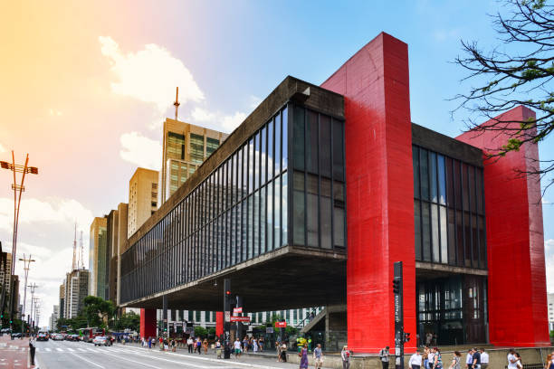
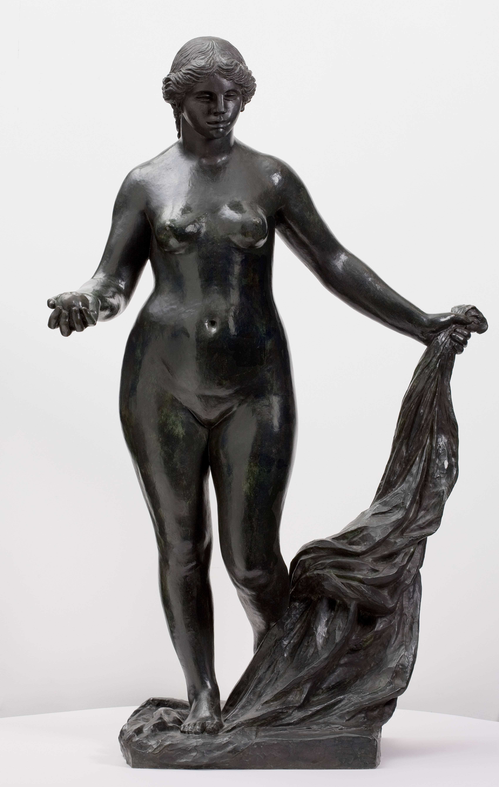
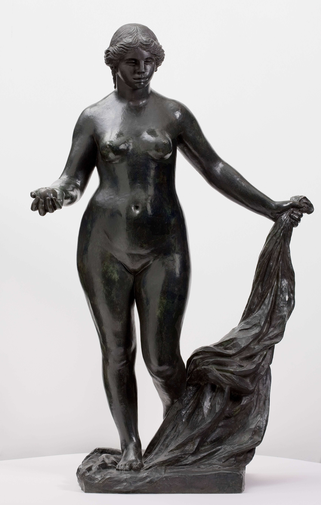
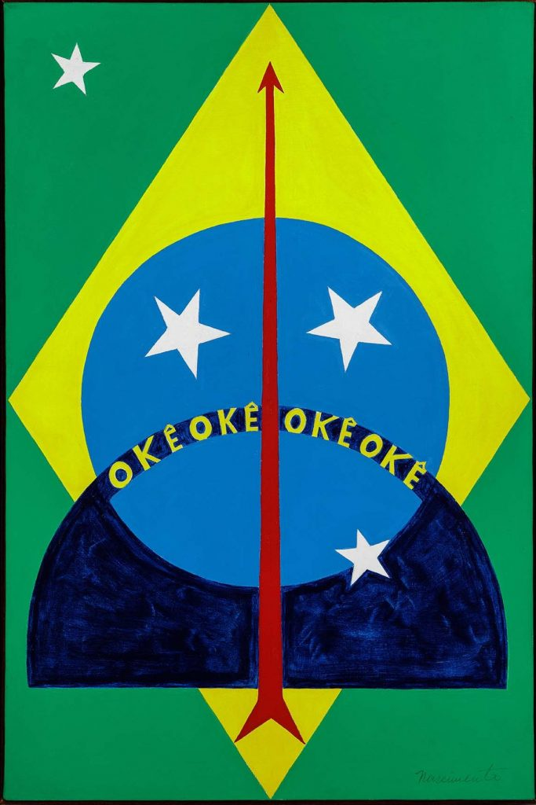
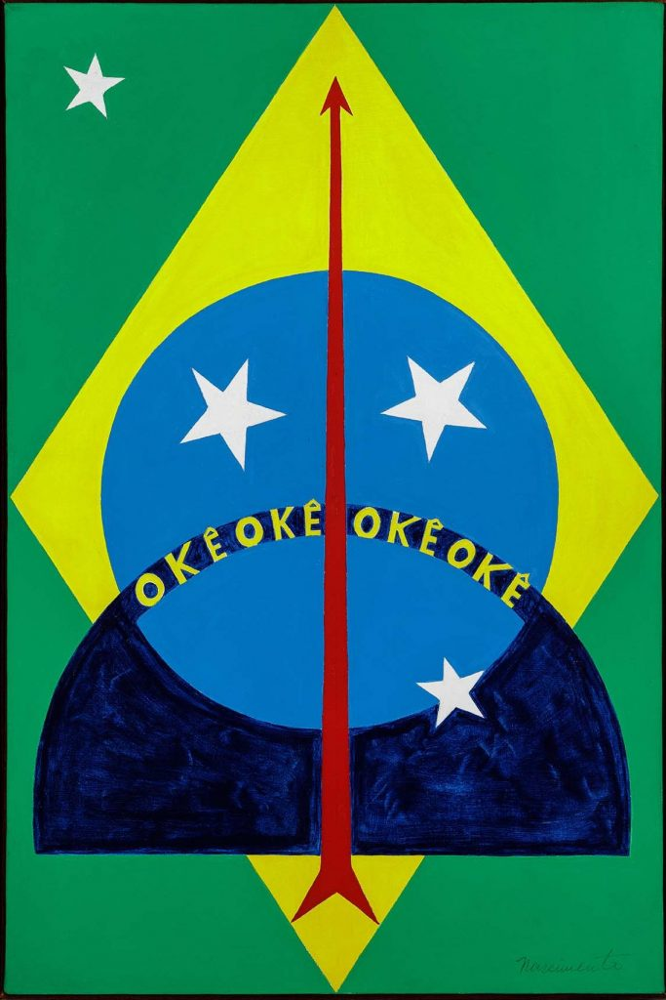

O acervo fixo é um conjunto de itens que fazem parte da coleção permanente de uma biblioteca, museu ou arquivo. Esses itens geralmente são considerados de grande valor histórico, cultural ou científico e são mantidos para fins de pesquisa e consulta a longo prazo. Eles podem incluir livros raros, manuscritos, objetos de arte, fotografias e arquivos históricos. O acervo fixo é geralmente protegido contra danos e desgaste e pode ser acessado apenas mediante solicitação especial. No Masp tem algumas obras que já são fixas de lá, então eles vão trocando para preservar a obra.
Essas são apenas algumas obras que tem no Masp, a primera imagem é uma arte Francesa o nome da obra se chama O Torso de Gesso de Matisse, A representação do torso de gesso e a figura de Vênus presentes na composição são vistos como elementos clássicos da expressão realista, porém idealizada, do corpo humano, característica da arte renascentista. A segunda imagem é uma escultura Vênus Vitoriosa do Masp feita de bronze em 1916, ela foi adquirida em uma doação da Sra Maria Helena Morganti em 1951,foi de autoria do Artista Pirre Aguste Renoir e com ajuda dos outros artistas como Richard Gieino e Louis Morel, foi devido a problemas de saúde do artista Francês, a escultura tem 180cm de altura.
A terceira imagem é da artista Anita Malfatti e o nome da pintura se chama A estudante, a obra tem múltiplas datas de 1915 a 1918, segundo a uma estudiosa, esse detalhe da roupa encontra uma semelhança aos uniformes escolares, que pode ser uma justificativa para o título. A quarta imagem é do Artista Abdias Nascimento que pintou a obra Okê Oxóssi de 1970, a bandeira do Brasil representada na pintura ressignifica a bandeira nacional sequestrada por conservadores militares. Na faixa da frase “ordem e progresso” o artista escreveu “okê”, palavra de saudação a Oxóssi, orixá da caça e da cura pelas ervas. Abdias Nascimento introduziu o arco e a flecha do caçador em mémória da luta dos negros e negras e dos povos orginários no Brasil.
 

 

Cinthia Marcelle é uma artista de vídeo e performance brasileira, com trabalhos que abrangem uma variedade de mídias, incluindo vídeo, fotografia e instalação. Ela nasceu em Belo Horizonte, Minas Gerais, em 1976 e atualmente vive e trabalha em São Paulo. Sua obra é caracterizada por uma abordagem experimental e crítica, explorando temas como política, história e sociedade. Marcelle tem participado de exposições em museus e galerias de arte em todo o mundo, incluindo a Documenta 14 em Kassel, Alemanha e na Bienal de São Paulo. Ela também é co-fundadora da Associação de Artistas e Produtores Independentes, que foi criada para promover a arte contemporânea independente no Brasil.
©Todos Direitos Reservados